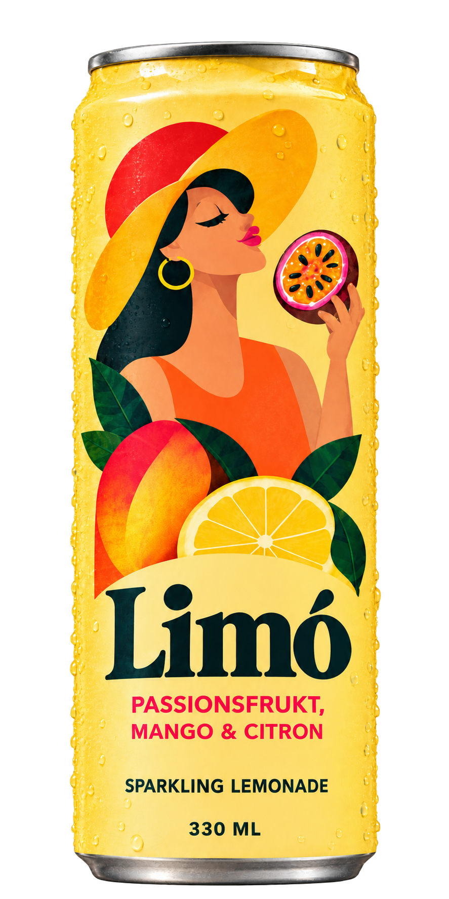
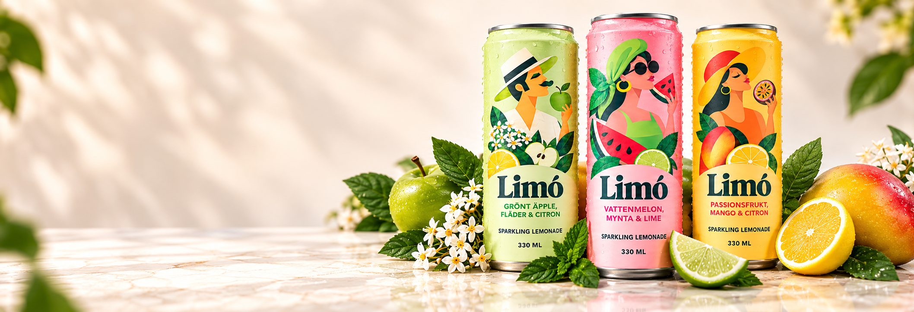

Passionsfrukt, Mango & Citron
Tropiskt, fruktigt och härligt uppfriskande

Fruktigt, friskt och fullt av smak. Upptäck lemonaden med det lilla extra, där spännande smakkombinationer och naturliga ingredienser står i fokus
Hitta din favoritVi tycker att livet blir lite härligare med goda smaker och bubblande stunder. Det var därför vi valde att skapa LIMÓ - för att ge den klassiska lemonaden en ny twist. Med fruktiga smaker och lekfulla kombinationer har vi utvecklat en lemonad helt utöver det vanliga.
Det finns mer att upptäcka än bara god lemonad! Häng med bakom kulisserna och ta del av våra berättelser, kreativa idéer och inspiration till både vardag och fest.
Bli först med att upptäcka det senaste från LIMÓ. Från nya smaker och spännande nyheter till inspiration för livets alla goda stunder.